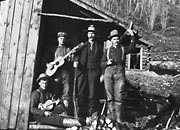

Le Yukon a toujours eu une vie culturelle active. Les Premières nations ont une longue tradition de danse, de chant, de musique et de contes. Au début du XXe siècle, le territoire comptait un opéra, des théâtres, des salles de danse et des salles d’art dramatique. On trouve encore dans le territoire des écrivains, des peintres, des acteurs, des musiciens, des danseurs et des sculpteurs pour venir enrichir l’esprit du Yukon.
Aux yeux des artistes et des artisans, la beauté naturelle du Yukon et le nombre infini de possibilités sont sources d’inspiration et d’émerveillement. Les gens s’adonnent à différentes activités artisanales comme le filage, le tissage et la confection de courtepointes pour donner forme à leur créativité et embellir leur intérieur et le rendre plus confortable. Les habiletés des Premières nations dans le tannage, la couture et le perlage font partie de leurs traditions et sont une source de fierté.
Le tannage
La première étape consiste à enlever la peau de l’orignal. Ensuite, vous coupez un petit arbre (à environ 5 pieds du sol) et vous faites une pointe au bout. Accrochez-y la peau, le poil vers le dessus (afin de pouvoir couper). Il faut utiliser un couteau bien affûté. Rasez le poil jusqu’à ce que la peau soit lisse.
Gertie Tom : extrait de How to tan hides in the native way
Hátthi edhó hande néts'et'á eyet yích'ō ts'è'in dechän udo łek’ets’enèkhel hék’i eyet dechän łek’ets’enèkhel eyet ka, uyé ts’än dats’echu. Hék'i mbra dét’ó eyet yí uyé háchō ch’o háts’et’á. Łúmch’ō uka hùmtl’ro huts’ín háts’et’á.
Gertie Tom
Dùts'ūm Edhó Ts’ètsi Yū Dän K'í
«Chacun a son propre style de fabrication de raquettes. Je ne sais pas pourquoi, mais chaque raquette est différente.»
Pearl Keenan, (1998)
Passer au tableau De vieux adages précieuxArts, artisanat et culture
(Ci-desss) Une femme tort une peau d’orignal au camp d’Albert Isaac sur le cours principal du lac Kluane (vers 1950).
Musée canadien des civilisations, J-2152.
Groupe tiré à quatre épingles (sans date).
AY, collection du musée MacBride, 80/153 nº 7

Croquis et poème (17 juillet 1892).
AY, documents d’Israel Albert Lee, collection Coutts, 78/69, MSS-091, f/1
Quatre mineurs-musiciens aux champs aurifères (vers 1900).
AY, collection Johns, 82/138 nº 289

Musiciens de régiment au lac Kluane (juillet 1942).
AY, collection Ormbrek, 90/52 nº 97
Fête de l’Halloween à Whitehorse (1951).
AY, collection Todd nº 9013

Jake Jackson fabriquant des raquettes, Teslin (1941).
AY, collection Ward nº 8849.

Lou Lundrigan, Bob Kliner, Kevin Hegarty et Pete Clute écoutent la Soirée du hockey, à la radio de la CBC, avril 1945.
AY, collection Turner, 88/16 nº 61A